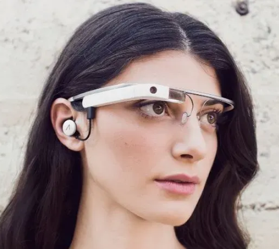
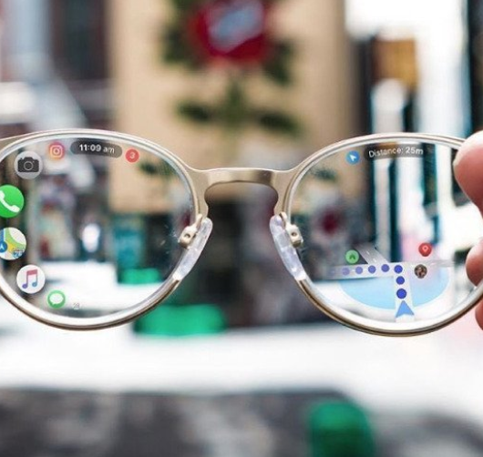

구글은 왜 젠틀몬스터에 투자했을까?
폴리나, 2025/07/09
구글은 기술이 아닌 디자인과 감성을 택했다.
스마트 안경은 단순 디바이스가 아닌 새로운 콘텐츠 플랫폼이 될 수 있다.
1. 기술보다 감성: '구글 글래스'의 실패에서 배운 것
구글은 2013년 '구글 글래스'로 웨어러블 시장에 도전했지만, 결과는 실패였습니다.
실패 이유 :
- • 너무 기술 중심이었다
- • UX보다 ‘기능성’을 강조했다
- • 패션 아이템으로 보기에 부담스러웠다
이번에는 다릅니다!
젠틀몬스터는 ‘기술이 아닌 감성’으로 승부하는 브랜드입니다.
구글이 그들과 손잡은 것은, 기술을 감성으로 감싸기 위한
전략적 선택으로 보입니다.이유는 분명했습니다.

2. MZ세대의 취향, 스마트폰 다음은 안경?
MZ세대는 기능보다 ‘감도’를 소비합니다.
단순히 AI 기능이 탑재되었다는 이유만으로 제품을 구매하지는 않죠.
그런 의미에서 젠틀몬스터의 합류는 마케팅적으로도 결정적입니다.
- • 트렌디한 디자인
- • 인스타그래머블한 착용 이미지
- • 글로벌 셀럽이 이미 착용한 브랜드력
이 모든 것이 구글이 전하고 싶은 스마트 글래스의 ‘두 번째 이야기’에 잘 어울립니다.
3. 구글·삼성·젠틀몬스터 : K-라이프스타일 플랫폼이 될 수도
보도에 따르면 구글은 삼성과의 협력을 통해 스마트 안경의 하드웨어 기술을 개발하고, 젠틀몬스터는 디자인을 맡습니다.
이 삼자 협력은 단순한 기기 개발을 넘어, ‘한국형 스마트 라이프스타일’의 가능성을 보여줍니다.
예상 시나리오 :
- • 실시간 번역, 내비게이션, 일정 확인 → “스마트폰 없는 일상”
- • 안경을 쓰면 연결되는 AI 비서 (Gemini)
- • 감성적 디자인 + 기능적 만족 → 스마트 안경의 대중화